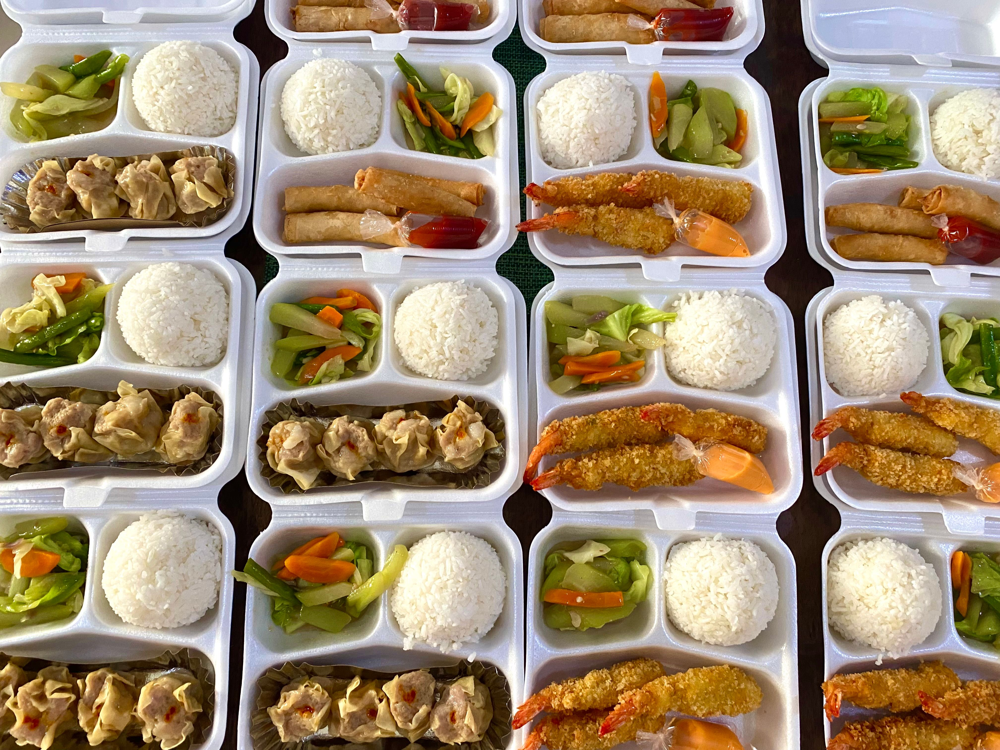

Nasi Kotak Komplit
Menu lengkap dengan lauk dan sayur, cocok untuk acara kantor.
Rp20.000
UMKM Pekalongan
Nasi kotak dan katering rumahan untuk acara kantor, arisan, dan hajatan.

Menu lengkap dengan lauk dan sayur, cocok untuk acara kantor.
Rp20.000
Cocok untuk acara besar, minimal pemesanan 20 porsi.
Rp25.000/porsi
Alamat: Jl. Kyai Mahbub, Kec. Bojong, Kab. Pekalongan